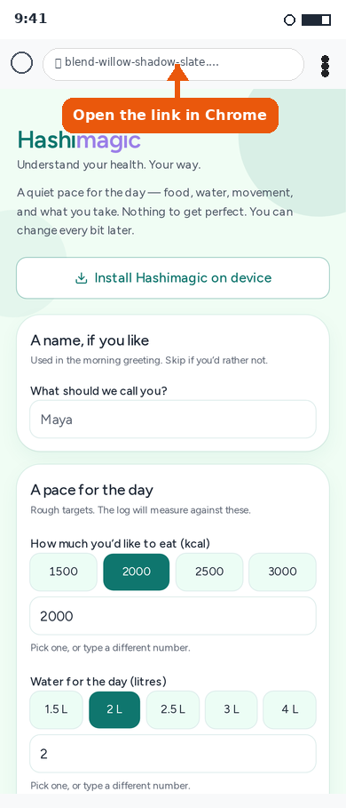
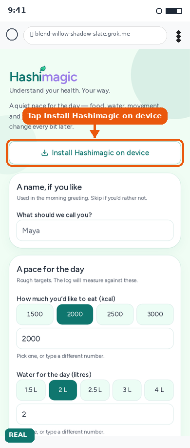
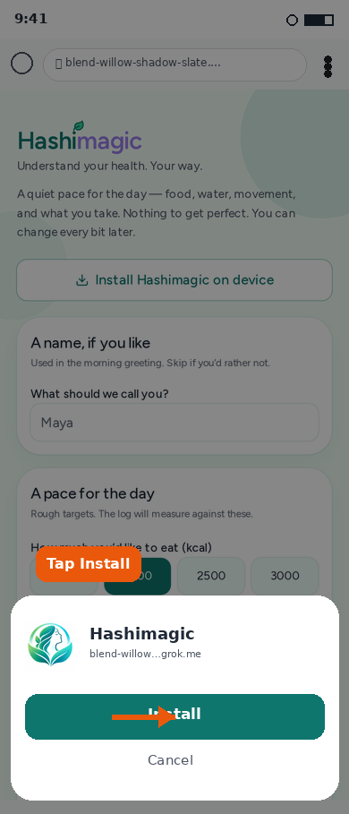
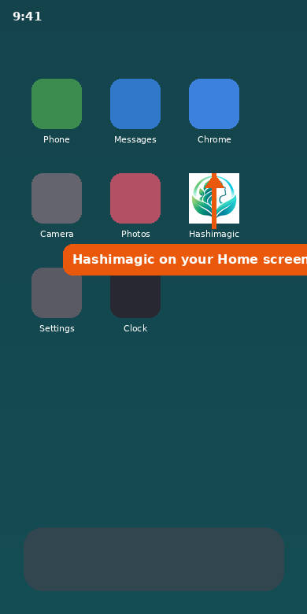
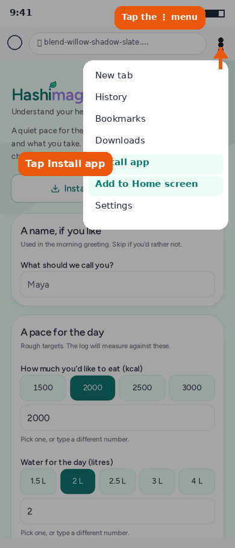

Add Hashimagic to your Home screen
A short walkthrough for Chrome on Android. Large pictures show exactly where to tap. You need an internet connection the first time.
Open the link in Chrome
On your Android phone, open Chrome (not another browser). Go to the Hashimagic beta link, or tap Open the app on the Hashimagic website. Accept the disclaimer if asked, then you should reach the setup screen.

Tap Install Hashimagic on device
On the setup screen, tap Install Hashimagic on device. Choose Android if asked, then confirm. That is the one tap install path on Android.

Confirm Install
Chrome shows a short prompt with the Hashimagic name and icon. Tap Install.

Find Hashimagic on your Home screen
When it finishes, you will see a Hashimagic icon on your Home screen. Tap it any time to open the app. Your diary is saved in the browser on your phone, so keep using the same installed icon.

If you don’t see the Install button
Some phones or browsers never show the in app Install button. Use Chrome’s own menu instead.
Open the Chrome menu
Tap the three dots ⋮ at the top right of Chrome. In the menu, tap Install app. On some phones the option is labelled Add to Home screen instead. Either one is fine.

Confirm Install
Chrome shows a short prompt with the Hashimagic name and icon. Tap Install. If you do not see a prompt, make sure you are in Chrome and try the menu again.